2017-10-19
股市的起起伏伏，归根结底，利益的博弈。与不熟知规则的大多数股民而言，是博弈。与掌握了规则甚至是知晓股市缺陷的人而言，不过是提款机罢了。
股市经历与感悟
1、搭讪，美女主动撩屌丝
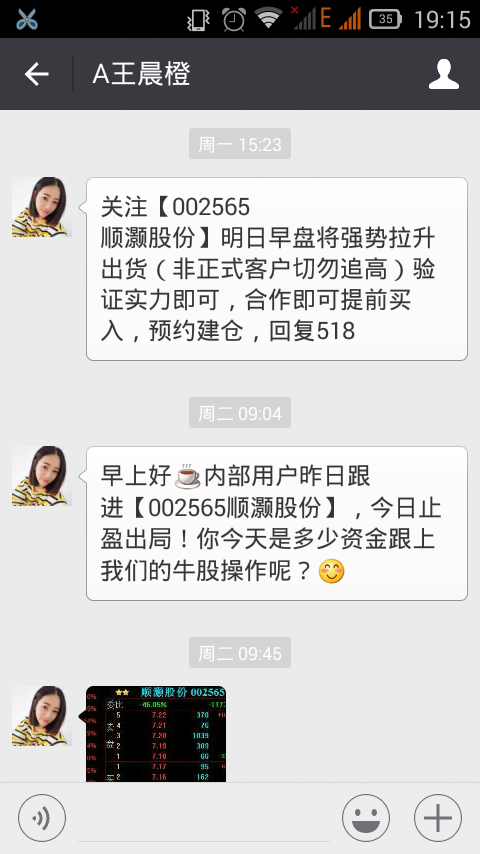
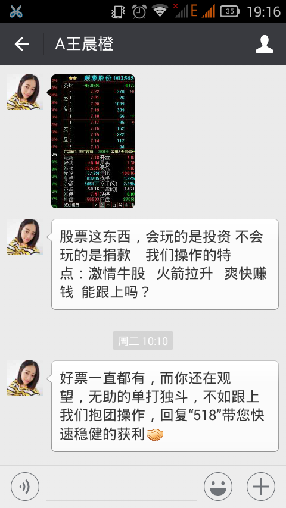
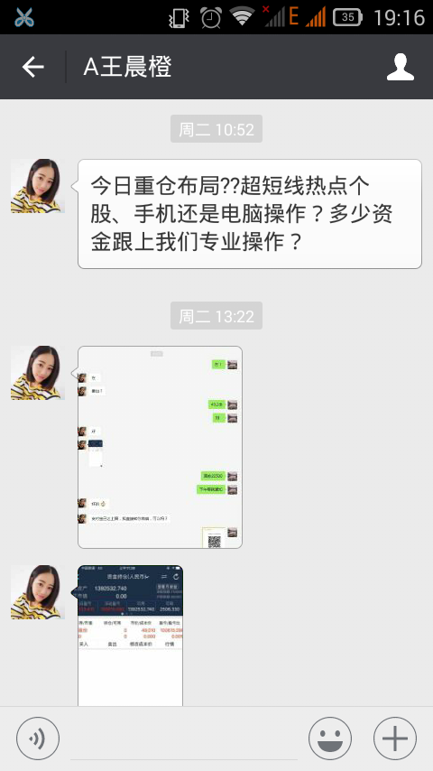
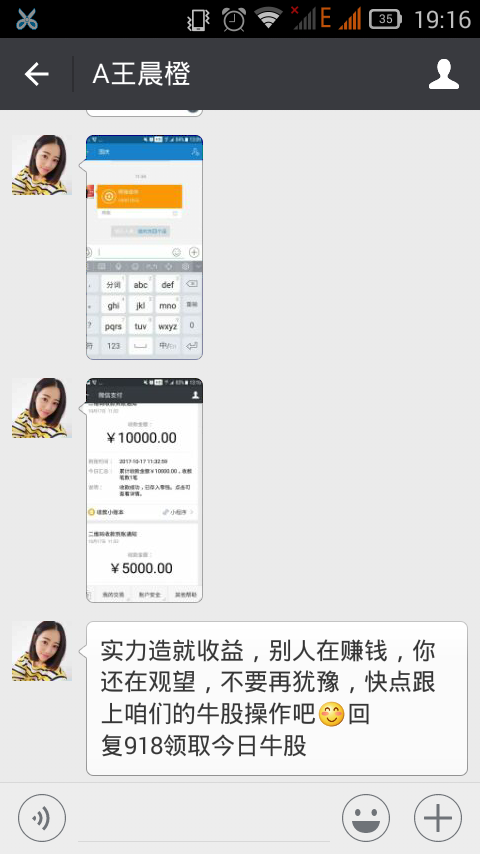
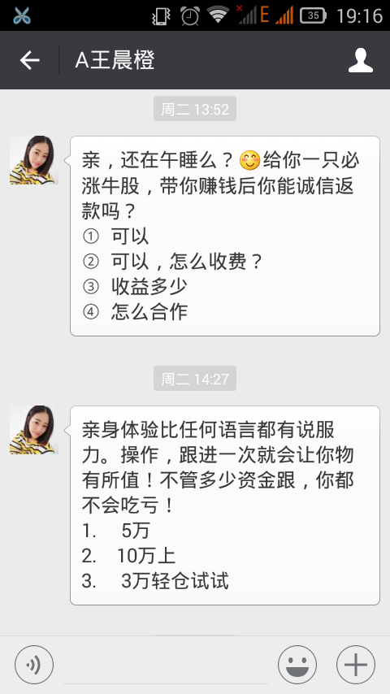
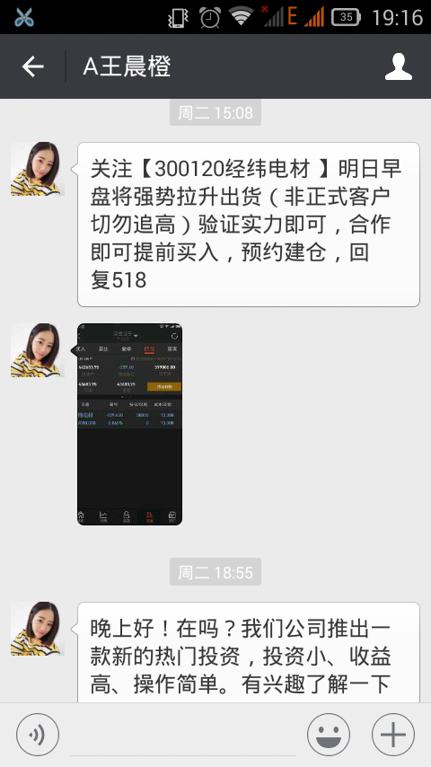
2、思绪：切，我自己就可以买到好股票

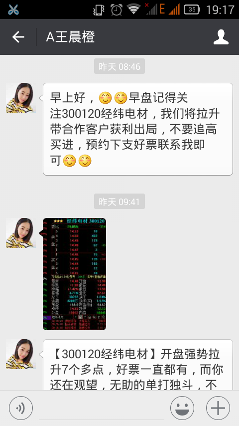
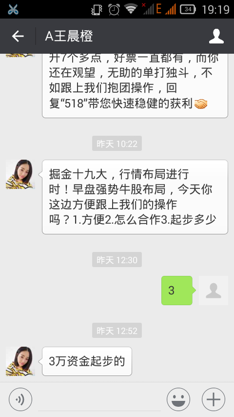
3、思绪：我去，一天拉升6%以上，收益一半，不管赚多少，至少是盈利的。要不试试呗，少买点，就算亏了，股票还在我手里，卖了就是。好，入！
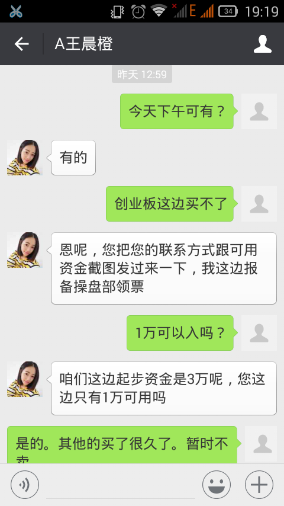
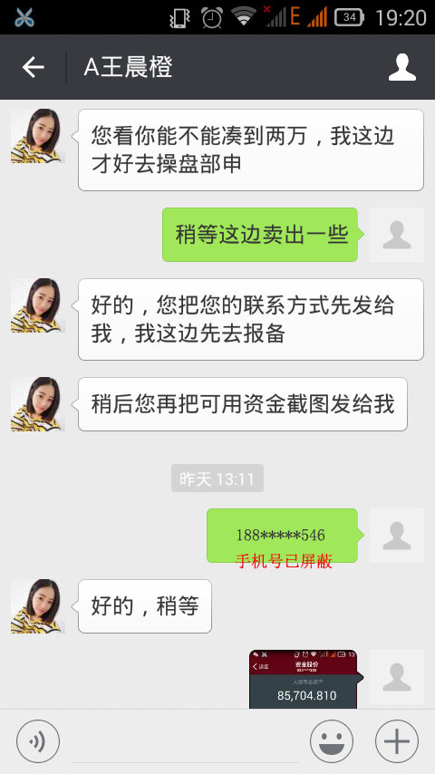
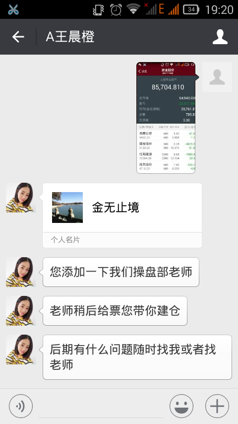
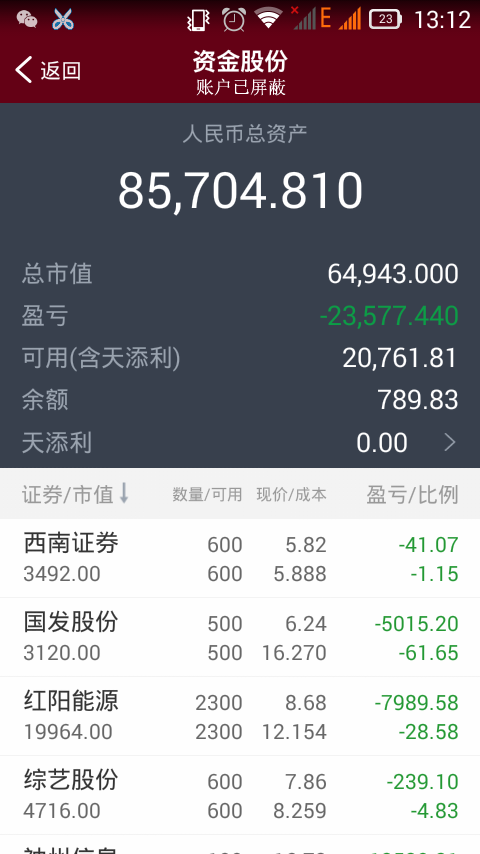
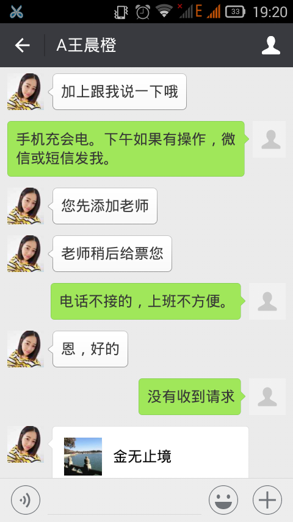
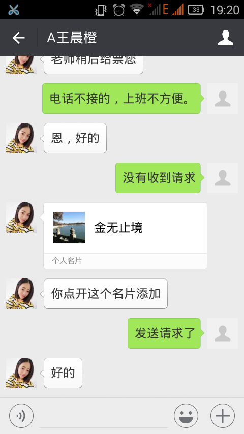
4、思绪：交易一笔，试试看，要是明早拉升6%-10%，下午可以再入，加一万。
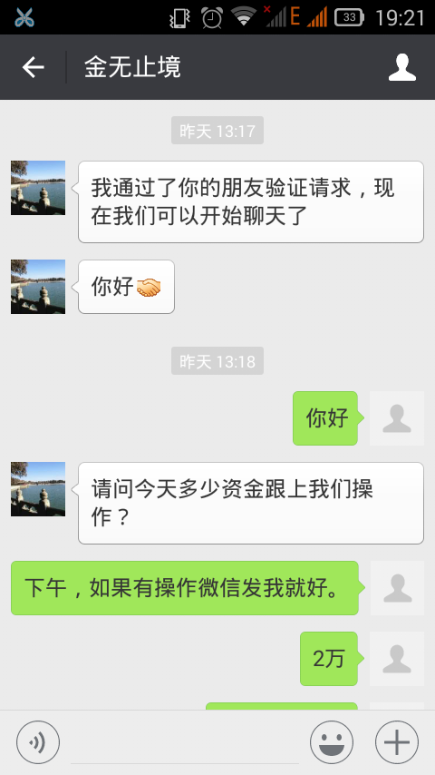
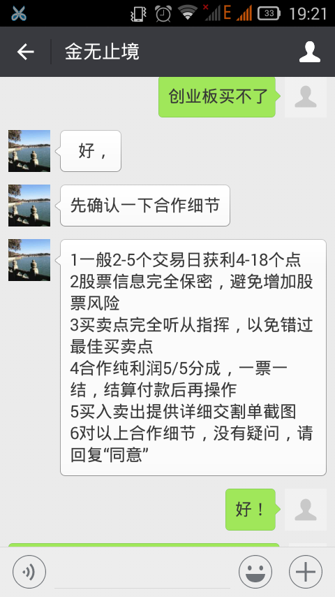
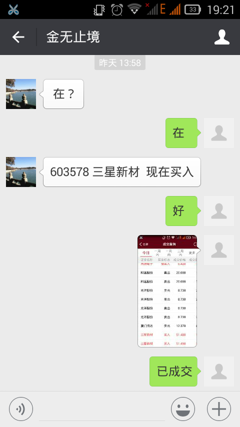
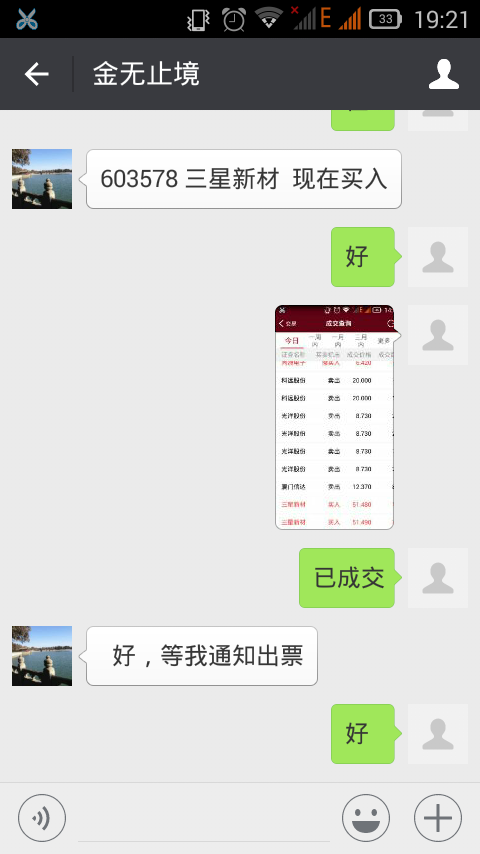
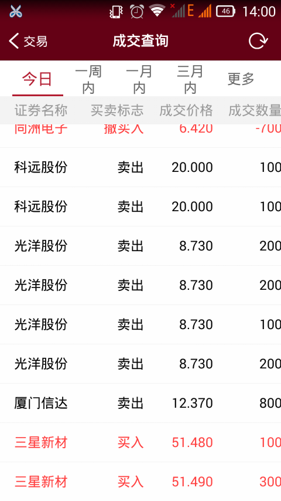
5、今天一早。思绪：你们卖消息，我出资取收益，如果我赚了得要有信誉，收益对半平分。这样,我只要再找几个下家，收益我拿一半。很快就赚发了。不行，我先试试看，若是赚了 再找下家。今天投资要是赚了，再来，赚多少，投入多少，不能加太多，不然输了，赔不起
6、今天中午。思绪：我去，沪深都跌了，就它没跌。上午没拉升，估计收盘前拉升。两点二十，还没拉升，耐心等着，认真工作，拉升时，会通知我的。14:50,我日，跌停了。麻痹的，赶紧卖，迟一天多亏10%。
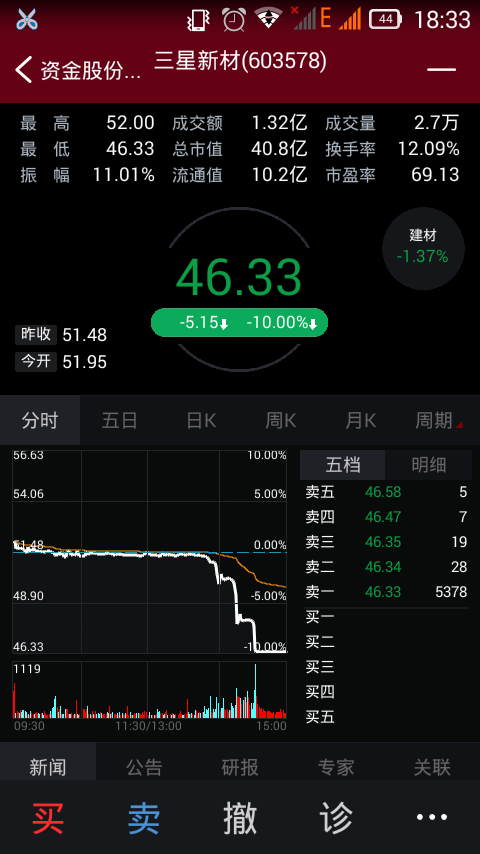
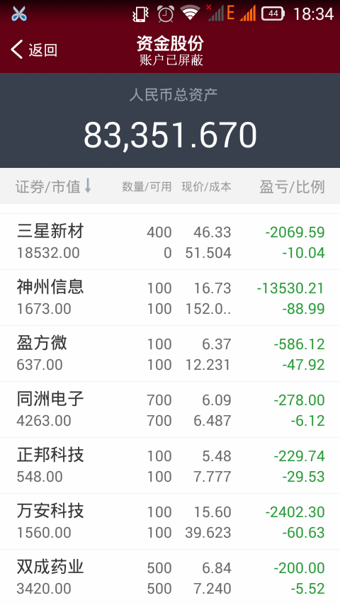
7、结果收盘。跌停卖不掉。预计明天，如果幸运的话，按跌停价-10%卖出，亏损近-4000元。不卖，继续持有，预计亏12000不成问题。
8、冷静分析，预计它们昨天大量资金申请合并赎回。拉人砸盘，维持高价，牟取暴利。我就是那“幸运的”高位接盘者之一。今天到中午，他们高价清仓。收盘前还极其恶心的以跌停价抛售，引起恐慌，打开跌停。细思，着实可恶！可恨！可耻！
站在它们的角度。不损人，真的就不能利己吗？应该是不能实现利益的最大化。
与我们个人而言。要知道，股市如同赌场，高收益、高风险；不同于赌场，越没人性、越无耻、越恶心，越能在股市逍遥，这是股市的现状；要知道，之所以会如此，是因为股市规则有缺陷！
与市场秩序、社会稳定而言，只要现有的规则缺陷不足以打破现有的稳定状态，都是其容忍的限度范围。只要股市的缺陷存在，而得不到修复,便有可能会威胁社会的稳定！
9、股市规则有何缺陷？（1）将股市交易的定价权，交给了可轻易拉升、砸坑的 砸盘价，而非股票的市场买卖意愿均价。（2）不等额的手续费，大额费率更低，让砸盘如虎添翼。
10、与我个人而言，亏了就亏了，谁让你愚蠢呢。可我还是希望，我们这个社会可以朝着更好的方向发展。希望股市的缺陷有更多的普通人可以认识到。如此，缺陷才有可能被重视，得到修复。
11、股市现有规则缺陷的恶意用法：因为现有股市规则是将定价权交给可拉、可压的砸盘价。其实不需要多少钱，有个9千万，在收盘前10分钟内买入8千万。剩下1千万于第二天开盘时，以涨停价急速拉升股价。便可很轻易的享有7千万接近10%的高额收益。收益完还顺手把股价砸低的就太恶心了。然而，这种可耻的行径、这种规则的恶用，每天都在现有的股市上演。
12、第一天收盘前10分钟买入，第二天开盘前10分钟拉升出仓，收益接近10%。现有的股市规则合理？买入的一天限售规则，在此情形下形同虚设，在一定程度上助长了恶性收益，增大了良性投资风险。
一天限售规则，目的是想用一天的时差来扼制恶性买入、卖出。目的是好的，然而现有规则却存在缺陷，两天之间的间隙交易时间趋近于0。规则优化建议：根据每笔交易的成交时间，从成交时间开始的净股市交易时间累计24小时内，对该笔交易禁止售出。如此优化有两个好处。其一，是实现了限售的目的，抑制了恶意买入卖出，弥合了两日之间的时间间隙。其二，是扼制了盲目跟风，即便有人不知死活的想要砸坑，因为每笔交易的时间限制，仍会有一大半以上的没有主见的股民会被动持有，不会跟风，外加一部分有主见的理智投资者。盲目跟风与被迫跟风便不复存在，恶意砸盘效力锐减。
13、望建议中的合理处，可以被采纳；望更多合理的建议，可以被提出；望集思广益，可以众人拾柴火焰高，共建中国特色社会主义美好未来！